Visual Portrayals of Our Landscaping Services
Property of Ishidoro Zen Gardens Inc.
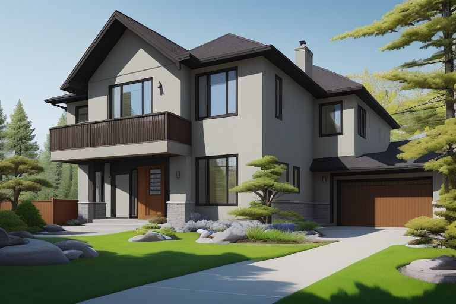
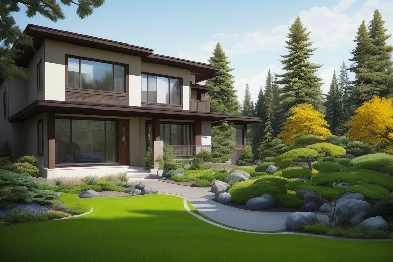
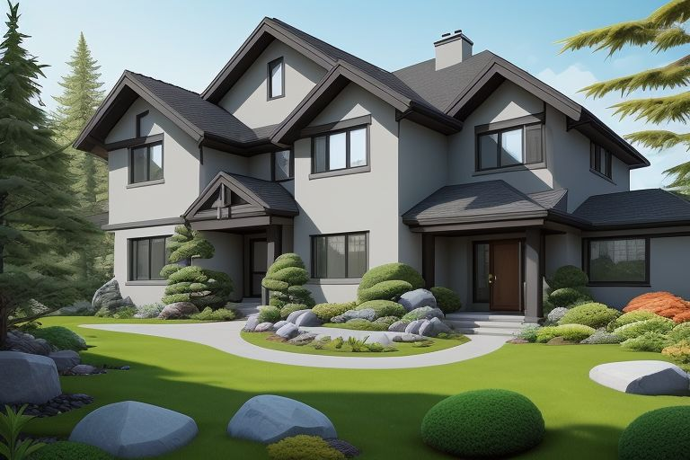
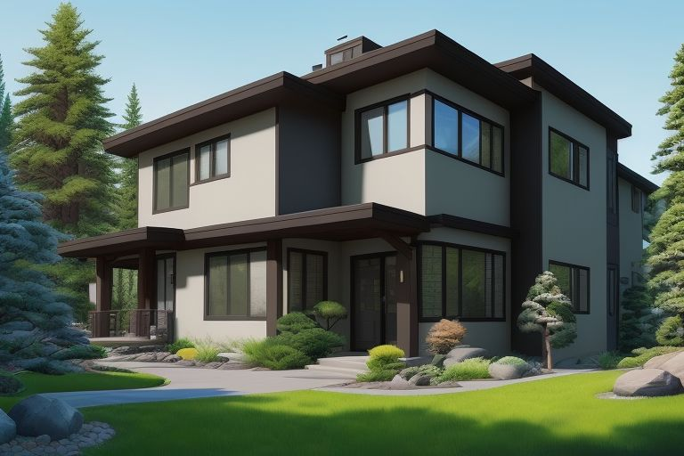
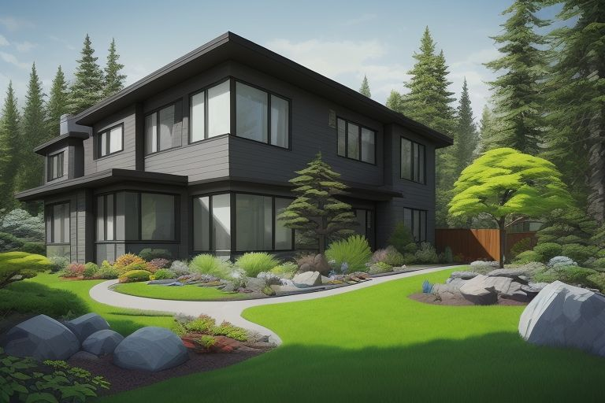
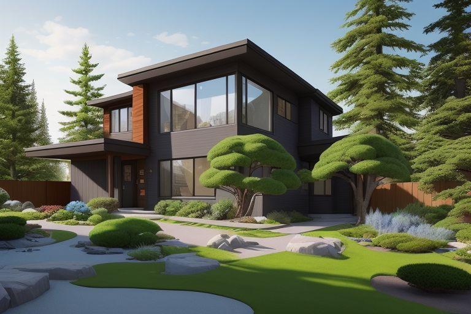
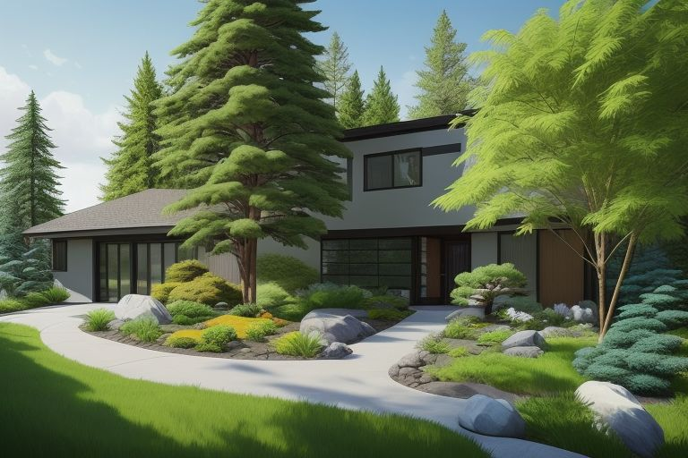
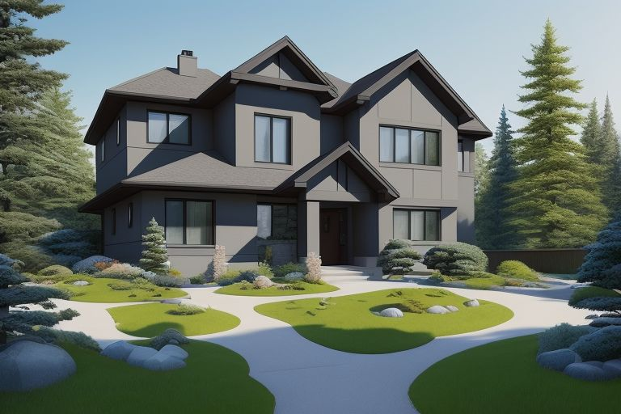
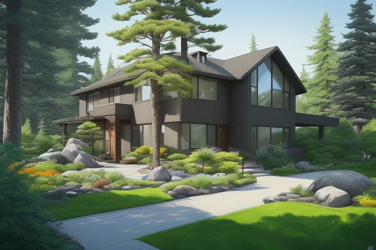
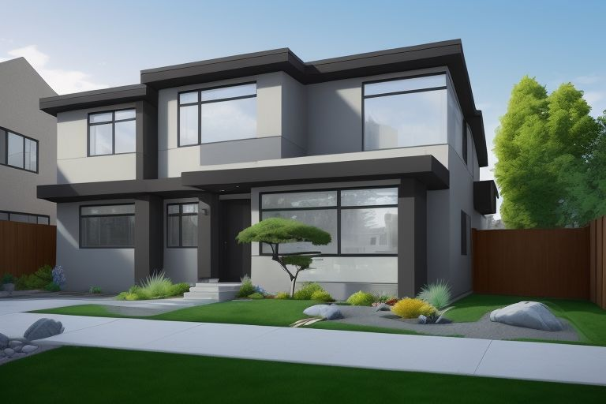
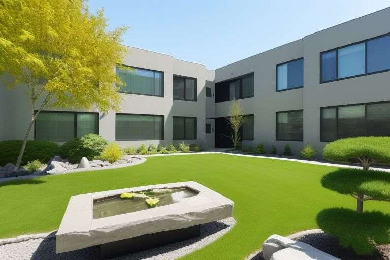
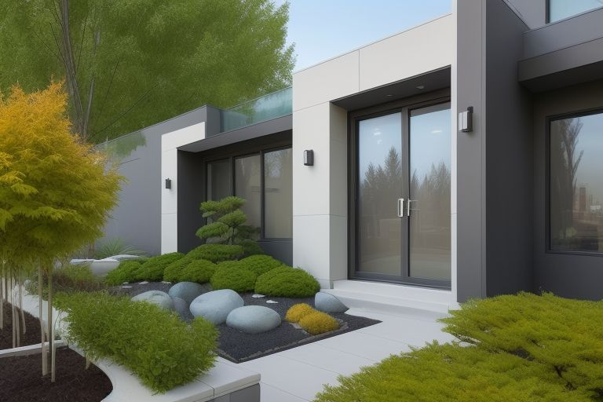
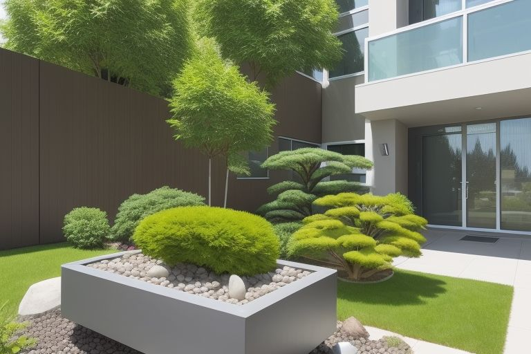
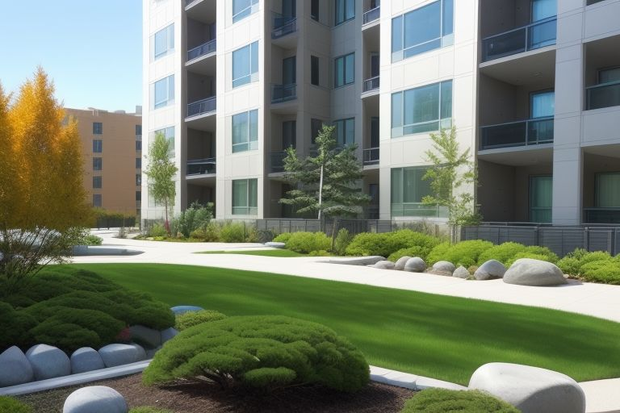
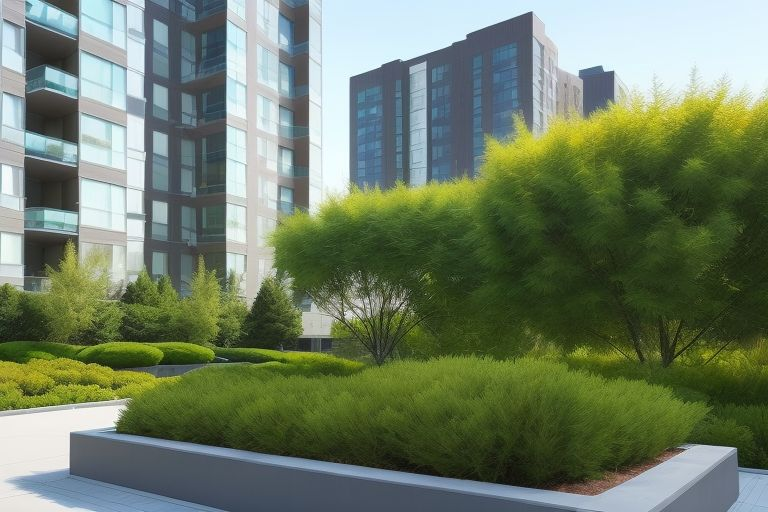
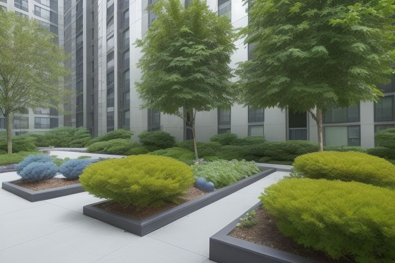
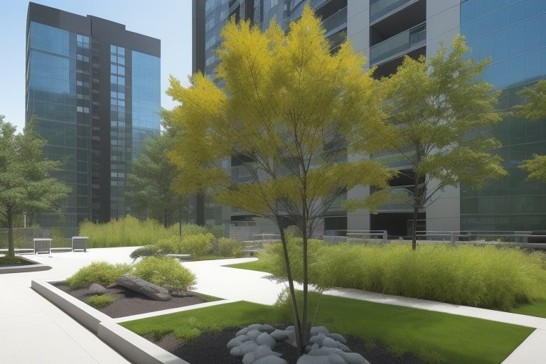
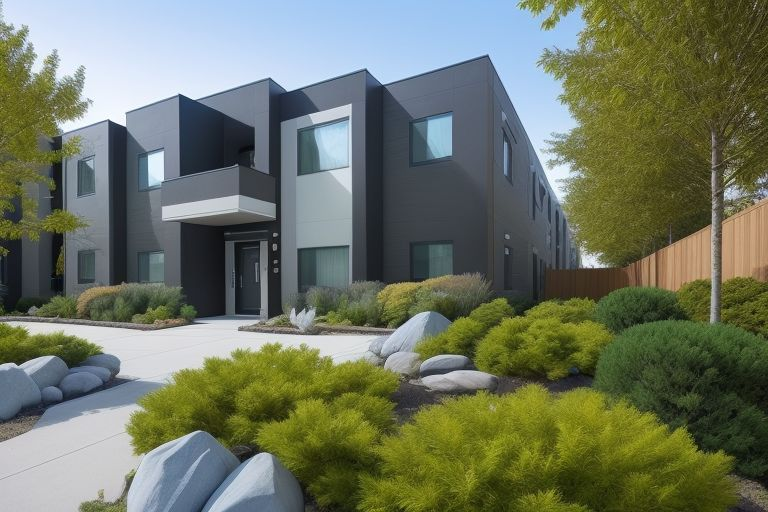
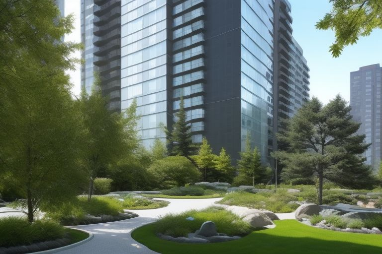
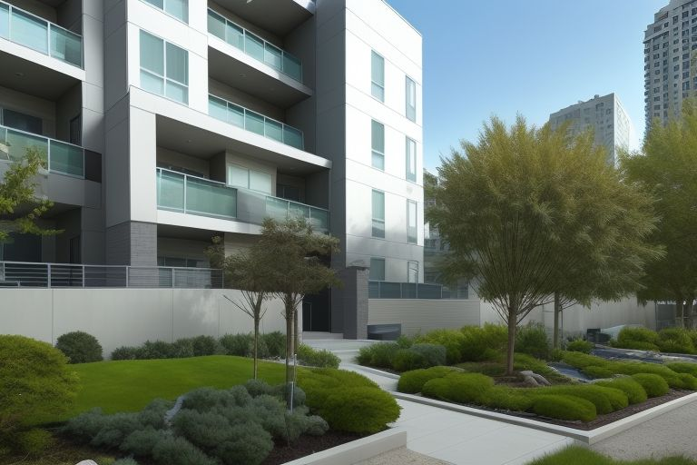

This gallery showcases a harmonious blend of traditional Japanese garden aesthetics, inviting you to explore a realm where each image tells a story of meticulous craftsmanship. Ishidoro Zen Gardens Inc. created this captivating display by combining advanced artificial intelligence technology with the nuanced artistry of human design, redefining beauty in landscaping and setting a new standard for contemporary garden design.